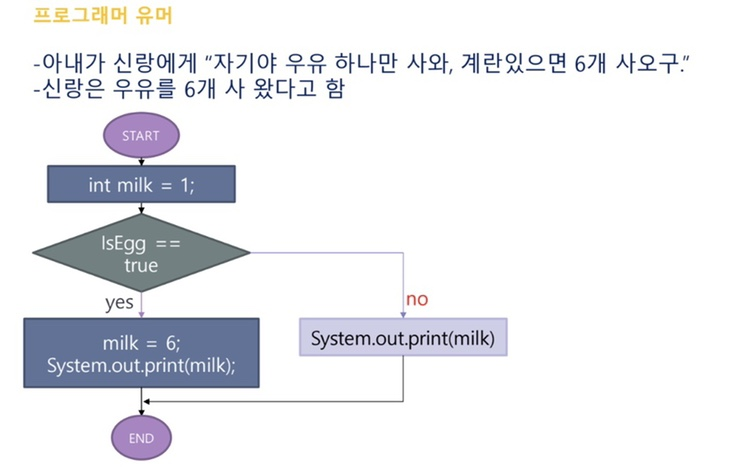

개발에서 프로그래머의 역할
- 📋기획자·디자이너가 그린 아이디어를 실제로 동작하는 프로그램으로 만드는 사람이에요.
- 🧩복잡한 요구사항을 컴퓨터가 이해할 수 있는 단계별 논리(로직)로 잘게 쪼개는 역할을 해요.
- 🎯컴퓨터는 사람처럼 "알아서" 해석하지 않기 때문에, 애매함을 없애고 정확하게 지시하는 게 프로그래머의 핵심 능력이에요.
💬 그래서 프로그래머는 글보다 순서도를 씁니다
- 🗣️사람끼리는 "적당히", "알아서", "있으면" 같은 표현으로도 대화가 통하지만, 이런 말은 사람마다 다르게 해석될 수 있어요.
- 📐그래서 프로그래머는 조건과 흐름을 순서도(Flowchart)로 그려서, 오해 없이 정확하게 로직을 전달해요.
😂순서도가 왜 필요한지, 유명한 유머로 확인해볼까요?
🗣️ 아내: "마트 가서 우유 하나 사 와. 그런데 계란이 있으면, 6개 사 와!"

🤦결과: 계란은 0개, 우유는 6개! "계란이 있으면"이라는 조건이 우유의 개수에 걸려버렸기 때문이에요. 프로그래머에게는 이런 애매한 문장이 제일 무섭답니다.
바이브 코딩이란?
- 💬AI에게 자연어로 "이런 걸 만들어줘"라고 말하면 AI가 코드를 대신 짜주는 방식의 프로그래밍이에요.
- 🙌코드를 몰라도 만들 수 있어서 노코드 방식이라고도 불러요.
- 🧑🔬2025년 초, AI 연구자 안드레이 카파시가 이 표현을 쓰면서 유행하기 시작했어요. 핵심은 "코드가 있다는 사실을 거의 잊고, 그냥 AI에게 말로 시키면서 결과를 보는 느낌"이에요.
프로그래머들이 사용하는 프로그램
프로그래머들은 코드를 작성할 때 다양한 IDE(통합 개발 환경)를 사용해요. 어떤 프로그램들이 있는지 살펴볼까요?
💡IDE란? Integrated Development Environment(통합 개발 환경)의 줄임말이에요. 궁금하면 구글에 검색해도 AI가 척척 알려줘요.
🅰️
Visual Studio
☕
IntelliJ IDEA
자바 개발 인기 IDE - 강추!
🍎
Xcode
애플 기기 앱 개발용
🤖
Android Studio
안드로이드 앱 개발 전용
💙
VS Code
텍스트 에디터지만 확장 기능으로 IDE처럼 사용 가능
🎯오늘 개발은 구글 AI 스튜디오를 사용할거에요!
웹 앱 개발
기본적으로 3개의 파일이 필요해요.
🧱
HTML
화면(front)의 구조를 잡는 태그들이 있는 파일
🎨
CSS
화면 디자인을 적어놓은 파일
⚡
JS
화면의 동작을 구현해 놓은 파일
- 🗂️"교육용 앱 만들어줘"라고 하면 3개의 파일을 만들어줘요.
- 📄"교육용 앱을 단일 파일로 만들어줘"라고 하면 1개의 파일로 만들어줘요.
프로그래밍 공부의 어려움
🙅생성형 AI와 사랑에 빠지지 마세요! = 배신 당하니까요.
토큰이 부족하기 때문에 오늘은 3번 정도만 실습해 볼게요.

마크다운을 사용해보자!
프롬프트를 그동안 쓰셨죠? 프롬프트만 쓰면 재사용하기 어려워요.
그래서 우리는 MD(마크다운) 파일을 만들어볼 거예요.
AI 캐릭터 챗봇을 만들어 보자!
🎯오늘 만들어볼 것 → 나만의 캐릭터와 대화하는 챗봇 만들기
🧩 AI 캐릭터 챗봇이란?
- 🗣️정해진 성격과 말투를 가진 캐릭터가 사용자와 대화를 나누는 콘텐츠예요.
- 🎮게임 속 NPC, 교육용 튜터 캐릭터, 상담/힐링 캐릭터 등 다양하게 활용돼요.
- 💬진짜 사람과 대화하는 것 같은 몰입감을 줄 수 있어요.
🎭 페르소나(Persona)란?
- ✨캐릭터에게 생명을 불어넣는 설정값이에요.
- 📛이름, 말투, 성격, 세계관(배경 이야기)으로 구성돼요.
- 🌟페르소나가 뚜렷할수록 챗봇이 매력적으로 느껴져요.
📋 챗봇을 만들 때 규칙
- 🎭페르소나 일관성을 유지해요. 캐릭터가 갑자기 다른 사람처럼 말하면 몰입이 깨져요.
- 🔑오늘은 "규칙 기반" 챗봇을 만들어요. 모든 대화를 다 이해할 수는 없으니, 핵심 키워드에 반응하도록 설계해요.
- 🙈모르는 질문에는 "모른다"고 딱딱하게 답하지 말고, 캐릭터답게 자연스럽게 회피하는 대사를 준비해요.
- 🔄대화 흐름(인사 → 키워드 응답 → 마무리/초기화)을 미리 설계해 둬요.
챗봇 설계
캐릭터 기본 설정부터 키워드 응답표, 예외 상황까지 — 단계별 설계표는 챗봇 생성기 페이지에 따로 정리해 두었어요. 버튼을 눌러 이동한 뒤, 칸을 채우면 설계 마크다운 파일이 바로 다운로드돼요.
다운로드한 마크다운 파일을 AI에게 주고, 그 내용을 토대로 html 단일 파일을 만들어 달라고 요청해 보세요.